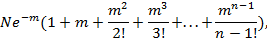

Круглая Радуга
1.
Вне пределов Нуля
Парадоксальная фаза, если слабые стимулы вызывают резкую реакцию.... Когда это было? На какой-то ранней стадии сна: не услышал сегодняшних Москитов и Ланкастеров ночью на пути в Германию, их моторы надрывались в небе, сотрясали и рвали его на части, целый час, пара разреженных зимних облаков плыли под стальными заклёпками брюха ночи, упорно вибрировали, ужасаясь подобной армаде бомбардировщиков летящих на задание. Твоя собственная фигура недвижна, дышит ртом, одна, лицом кверху на узкой койке у стены совсем без-картинной, без-схемной, без-картной: такой обыденно пустой.... Твои ступни смотрят на высокую прорезь окна в дальнем конце комнаты. Свет звёзд, непрестанный гул отлёта бомбардировщиков, вкрадывающийся ледяной воздух. На столе навал книг в истрёпанных обложках, наброски колонок озаглавленных Время / Стимул / Секреция (30) / Замечания, чайные чашки, блюдца, карандаши, ручки. Ты спал, видел сны: в тысяче футов над твоим лицом летели бомбардировщики, волна за волной. Снилось помещение, громадное место собраний. В нём множество людей. С недавнего времени в определённый час, круг белого света, довольно интенсивного, скользит, снижается, следуя наклонной линии, по воздуху. И тут, неожиданно, он появился снова, курс всё также линейный, как всегда, справа налево. На этот раз свечение неровное—свет изливается уже яркими вспышками или сверкает сполохами. Явление, теперь уже, воспринято присутствующими как предвестие—что-то не так, что-то совсем даже не так на сегодня… Никто не знает что означает этот круг света. Была собрана комиссия, проводилось исследование, ответ был так маняще близок—но теперь поведение света изменилось…. Собрание откладывается. От столь беспорядочных сполохов, наполняешься ожиданием чего-то ужасного—не так, чтоб прям тебе воздушный налёт, но что-то около того. Бросаешь быстрый взгляд на часы. Ровно шесть, стрелки идеально вверх и вниз, и понимаешь, что шесть это час появления света. Выходишь, и тебя окружает вечер. Это улица перед домом твоего детства: каменистая, в колдобинах и трещинах. Ты сворачиваешь влево. (Обычно в этих снах про дом ты выбираешь местность направо—широкие ночные газоны, древние деревья грецкого ореха высятся над ними, холм, деревянный забор, в поле лошади с впадинами глаз, кладбище.... Тебе в этих снах надо дойти—под деревьями, через тени—прежде чем что-то случится. Чаще всего ты выходишь в поле под паром, рядом с кладбищем, там так много осенних шмелей и кроликов, где живут цыгане. Иногда ты летаешь. Но никогда не получается подняться за определённую высоту. Чувствуешь как тебя затормаживает, до неумолимой неподвижности: это не острый ужас падения, а всего лишь запрет, но просить бесполезно… и местность начинает расплываться... ты знаешь… что…) Но в этот вечер, в шесть часов светящегося круга, ты вместо этого сворачиваешь влево. С тобою девушка, которая тебе жена, хотя вы никогда не вступали в брак, и никогда не встречал её прежде, но знаешь уже много лет. Она молчит. Недавно прошёл дождь. Всё поблескивает, кромки исключительно чёткие, освещение не сильное и очень прозрачное. Куда ни глянь, повсюду пучки белых цветов. Всё в цвету. Ты снова подмечаешь круг света в его привычном спуске наискосок, тот кратко мигает и гаснет. Несмотря на явную свежесть, недавний дождь, живые цветы, вид вокруг тебя настораживает. Ты пытаешься подобрать запах какой-нибудь свежести, что соответствовала бы тому, что видишь, но не выходит. Всё обеззвучено, лишено запахов. Из-за такого поведения света, что-то должно случиться и тебе остаётся лишь ждать. Всё сияет вокруг. Влага на мостовой. Набрасывая какой-то тёплый капюшон себе на шею и плечи, ты хочешь сказать жене: «Это самый зловещий момент в этот вечер». Но есть слово подходящее лучше «зловещего». Пытаешься вспомнить его. Это чьё-то имя. Оно ждёт за сумерками, ясность, белые цветы. Свет тихонько постучал в дверь.
Ты вскинулся и сидишь посреди своей постели, сердце испуганно бьётся. Ты ждал что он повторится и услышал множество бомбардировщиков в небе. Повторный стук. Это оказывается Томас Гвенхидви, приехал аж из Лондона с новостью про Спектро. Ты проспал гром эскадрилий ревущих без перерыва, но тихий сдержанный стук Гвенхидви разбудил тебя. Нечто подобное происходит в коре Собаки во время «парадоксальной» фазы.
А призраки толпятся под карнизами. Растягиваются среди заснеженных и закопчённых печных труб, подвывают в воздушные шахты, слишком разрежены, чтобы самим производить звуки, теперь навеки иссохшие среди этих мокрых вихрей, растянуты, но никогда не перервутся, исхлёстаны стеклянистой круговертью с французистыми завитушками поверх крыш, вдоль посеребрённых низин, проскальзывают где море, замерзая, бьётся о берега. Они сбиваются вместе, плотнее день ото дня, английские призраки, в такие столпотворения по ночам, засеивают воспоминаниями зиму, их семена никогда не прорастут, чересчур затерялись, самым частым нынче стало слово, намёк живущим —«Лисы», выкликаемое Спектро через астральные пространства, это слово адресовано м-ру Пойнтсмену, который тут не присутствует, которому не передадут, потому что у пары-тройки, в Секции Пси, способных расслышать, подобного загадочного хлама завались на каждом сеансе—если вообще обратят внимание, то оно отметится в проекте Мильтона Гломинга с его подсчётом слов—«Лисы», отдаёт зудящим эхом в этот день, Кэрол Эвентир, медиум живущий в «Белом Посещении», завитки плотно приглажены поперёк его головы, выговаривает слово «Лисы» своими очень красными, тонкими губами… у половина госпиталя Св. Вероники этим утром разнесло крышу, оставив лишь стены как в древнем аббатстве Ик Регис, в мелкий, как снег, прах, а бедняга Спектро взлетел в освещённой норе-кабинке как и вся тёмная палата, стали частью взрыва, чьё приближение он так и не услыхал, звук слишком запаздывает, уже после взрыва, призрак ракеты приветствует призраки только что произведённые ею. Дальше тишина. Очередной «случай» для Роджера Мехико, воткнуть кругоголовую кнопку в его карту, квадрат перешёл от двух к трём попаданиям, выравнивая заполнение трёх вероятностей, что как-то отставали в последнее время…. Кнопка? Да и того меньше, просто дырка от кнопки в бумаге, которую однажды снимут, когда ракеты прекратят падать, или когда молодой статистик решит забросить свой подсчёт, бумагу унесут уборщицы, она будет разодрана, сгорит… Пойнтсмен один, беспомощно чихает в своём расплывающемся бюро, под лай из конур, приглушённый и расплющенный холодом, покачивает головой, нет… во мне, в моей памяти... больше, чем просто «случай»… наша одинаковая смертность… эти трагичные дни… Но вот он уже просто трясётся, разрешает себе уставиться через пространство своего кабинета на Книгу, напомнить себе, что из числа начальных семи остались лишь двое совладельцев, он сам и Томас Гвенхидви, что ухаживает за своей бедняжкой в окраинном Степни. Пять призраков нанизаны по ясной возрастающей: Памм в перевернувшемся джипе, Эстерлинг в ранние налёты Люфтваффе, Дромонд немецкой артиллерией на Шел-Корнер, Ламплайтер летающей бомбой, и теперь Кевин Спектро… авто, бомба, орудие, V-1 и теперь V-2, и у Пойнтсмена нет других чувств кроме ужаса, вся кожа ноет, от нарастающей усложняемости этого, от диалектики, что тут явно подразумевается….
– Ах, не иначе. Проклятие мумии, ты идиот. Боже, Боже, я созрел для Крыла Д.
В общем, Крыло Д это прикрытие «Белого Посещения», всё ещё содержащее пару настоящих пациентов. Мало кто из сотрудников ПРПУК приближается к нему. У сведённого к минимуму обычного больничного штата там своя столовая, туалеты, спальни, кабинеты, продолжают как при старом мирном времени, терпя Понаехавших на своей территории. Точно так же как, в свою очередь, работники ПРПУКа терпят садовое и довоенное сумасшествие Крыла Д, крайне редко находя случай для обмена информацией о лечении и симптомах. Да, а могли бы и потесней сотрудничать. Истерика, в конце концов, не та же разве истерика. А вот и нет, иди и убедись, что нет. Как долго можно чувствовать себя таким беззаботно правым касательно перемены? От заговоров настолько мягких, таких домашних, от змия свернувшегося в чайной чашке, застывшей руки, отведённых глаз при словах, словах, что могут довести до состояния, с которым Спектро сталкивался каждый день в своей палате, уже не существующей… до того, что Пойнтсмен обнаруживает в Собаках: у Пётра, Наташи, Николая, Сергея, Катеньки—или у Павла Сергеевича, Варвары Николаевны, а потому детей их, и—Когда это так отчётливо читается в лицах врачей… Гвенхидви под его мохнатой бородой не настолько уж непробиваем, как, возможно, ему бы этого хотелось, Спектро поспешая со шприцем к своему Лису, когда на самом деле ничто не силах остановить Абреакцию Бога Ночи, покуда не прекратится Блиц, ракеты не будут разобраны, а вся плёнка прокручена сзаду наперёд: полированная обшивка обратно в листовое железо, обратно в отливки, в белую раскалённость, в руду, в Землю. Но действительность необратима. Каждая вспышка цвета пламени, за которой следует взрыв затем звук падения, издёвка (может ли такое случиться ненароком?) обратимого процесса: каждой из них Господь узаконивает своё Государство, а мы, не способные его обнаружить, ни даже понять, начинаем думать о смерти не чаще, право же, чем прежде… и, не в силах предвидеть их появление, не умея сбивать, держимся на притворстве, как и во времена без Блицев. Когда это и в правду происходит, отделываемся словом «случай». Или так уж нас убедили. Есть такие уровни, где случайность едва различима. А для таких работников как Роджер Мехико, это музыка, довольно величавая, все эти серии степеней

термины исчисляются соответственно ракетопопаданиями в квадрат, распределение Поиссона определяет не только эти уничтожения, от которых никто не в силах убежать, но и несчастные случаи при верховой езде, группы крови, радиоактивный распад, количество воен за год….